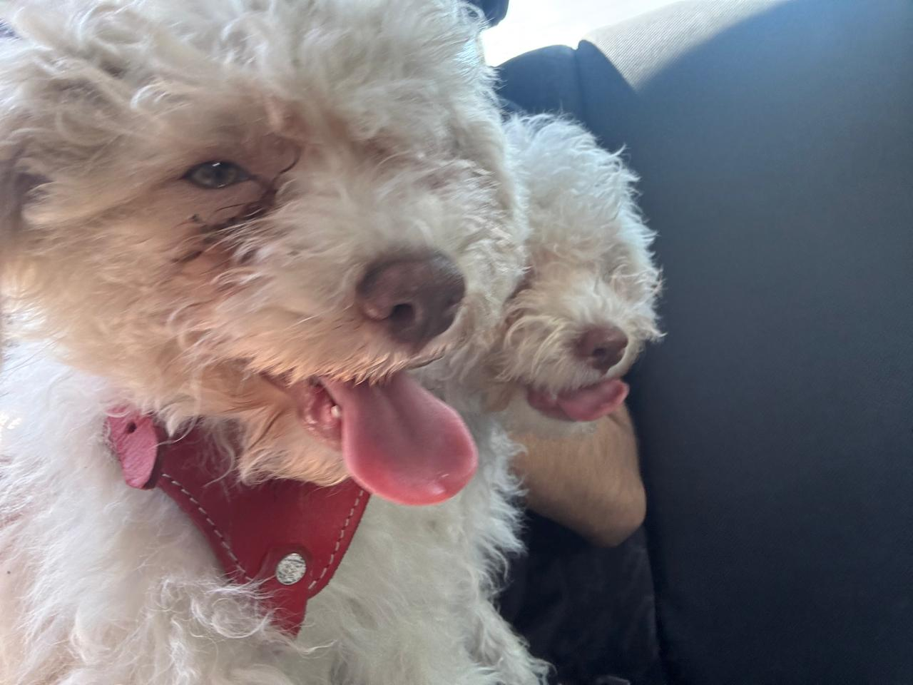
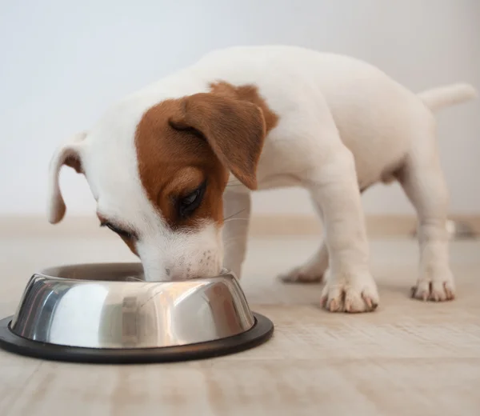
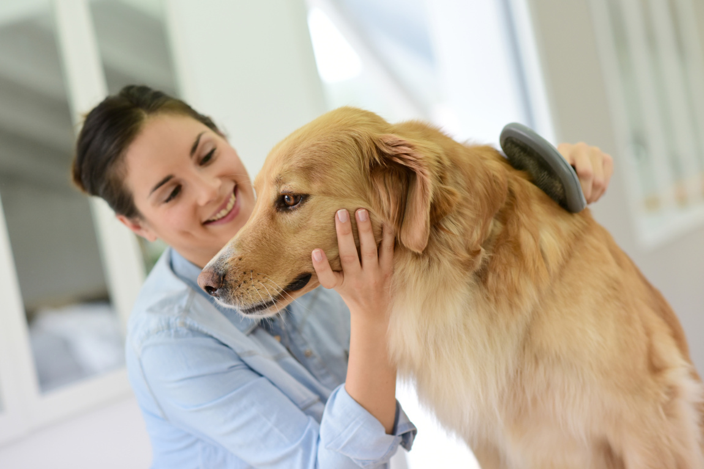
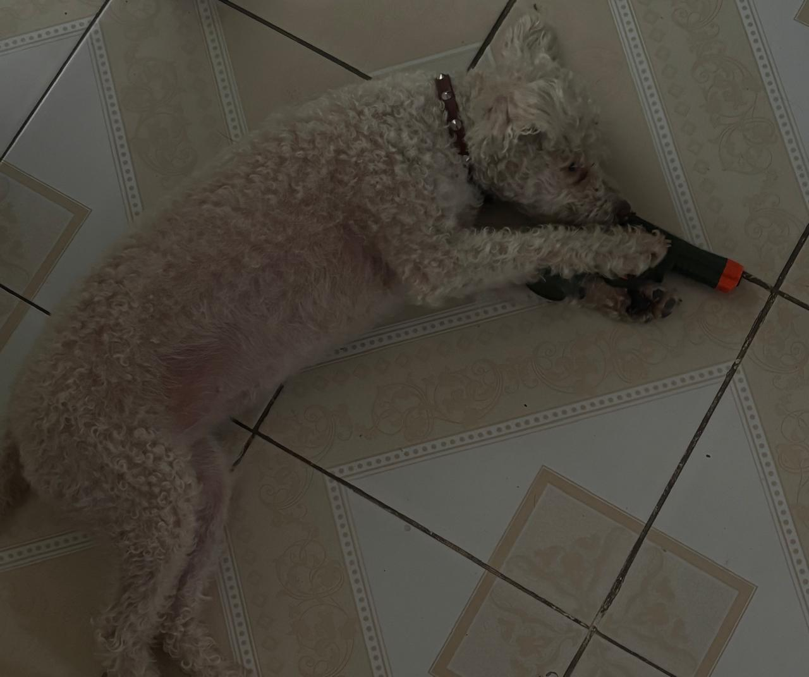
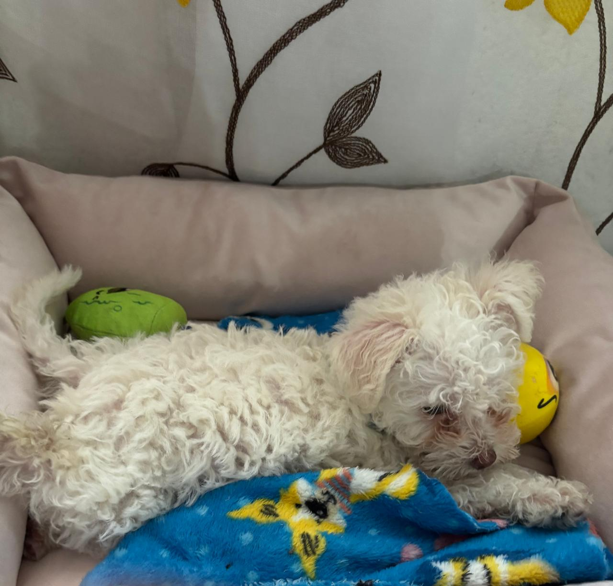
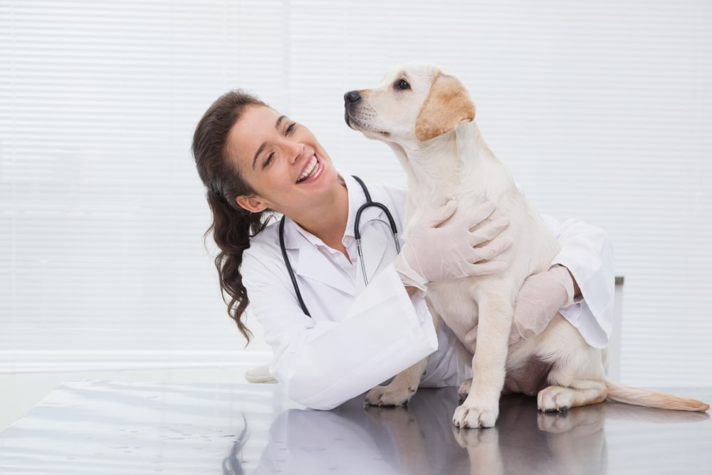
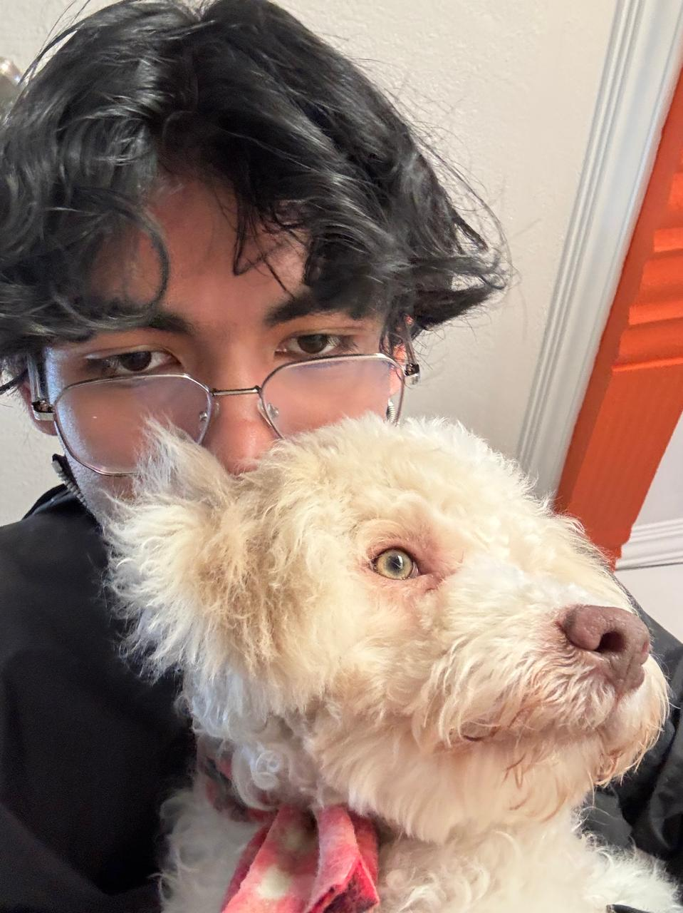

Cuidar y querer a tus mascotas te hace mejor persona

Gowellitas es una mini web creada con el fin de compartir información del cuidado de tus mascotas responsable.
Cuidados Básicos
Tener un perro implica responsabilidades que forman parte de tanto la vida de tu mascota como la tuya, nunca olvides que ellos dependen de ti!!! . Estos son algunos cuidados básicos que debemos tener en cuenta.
Alimentación

Una alimentación adecuada/sana y agua limpia son necesarias para mantener una buena salud de tu perrito. Las necesidades pueden variar dependiendo de la edad, tamaño y condición del perro.
Higiene

Mantener una buena higiene ayuda a prevenir problemas y a que tu perrito se sienta comodo. El cepillado, el baño y la limpieza de algunas zonas deben realizarse de acuerdo con sus necesidades.
Juego

Jugar con tu mascota alegra sus dias y los tuyos tambien, juega con ella e incluso haz ejercicio con ella
Descanso

Los perros también necesitan un espacio tranquilo y cómodo donde puedan descansar y sentirse seguros.
Salud y Adopción Responsable
Salud

Las visitas al veterinario, las vacunas y la desparasitación forman parte del cuidado de un perro. También es importante prestar atención a cambios en su comportamiento o estado físico y consultar a un profesional cuando sea necesario.
Adopción responsable

Adoptar un perro es una decisión que requiere compromiso. Antes de hacerlo es importante considerar el tiempo, espacio y recursos necesarios para darle una vida adecuada. Un perro necesita cuidados y atención durante toda su vida por lo que antes de adoptar recuerda que es como un hijo, que no puedes abandonar. Tu mascota te ama y tu la amas, estan amarrados uno al otro, quierelo!!!!!!!.